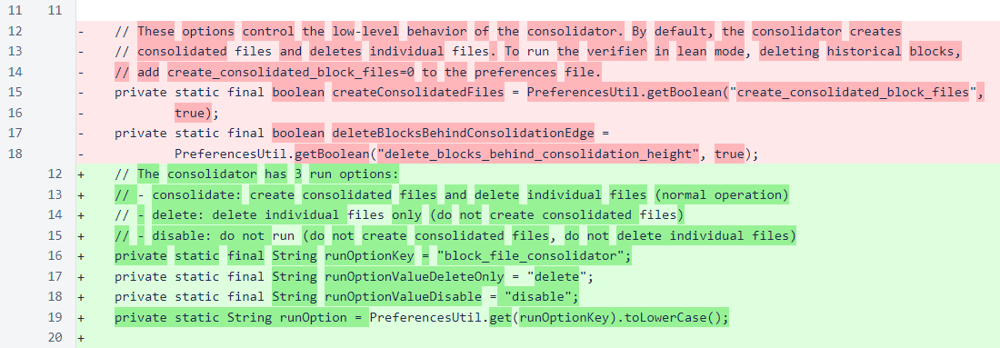
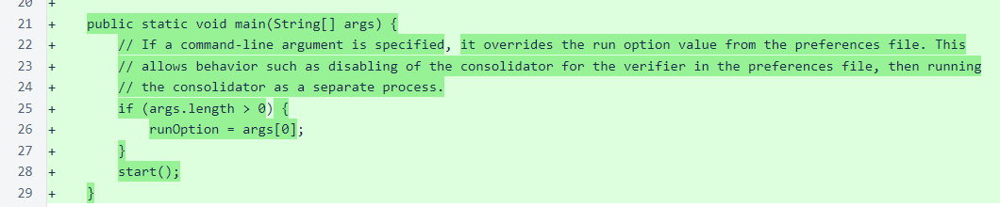
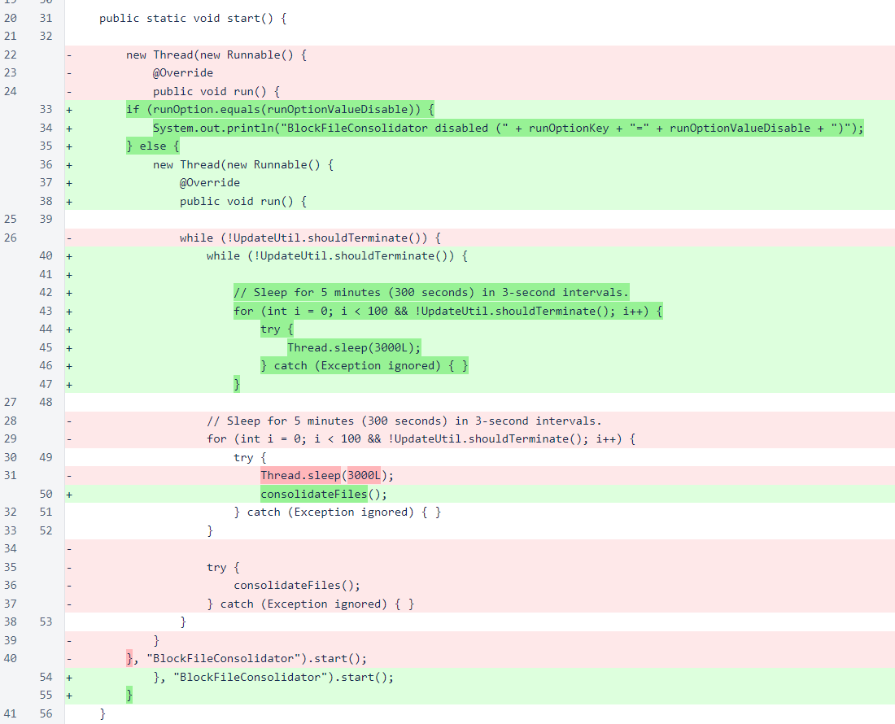
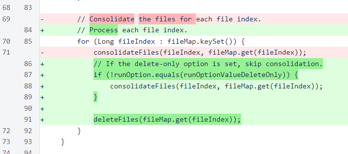
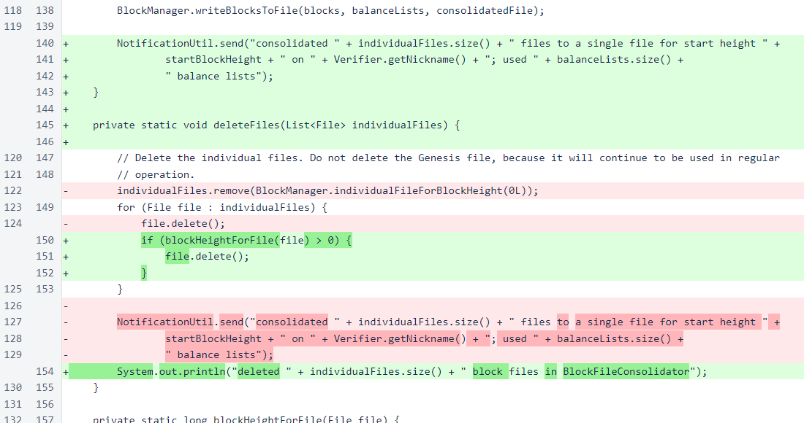

Nyzo version 538 (commit on GitHub) implements the BlockFileConsolidator options.
This version affects the verifier, sentinel, and Micropay server. They all use the BlockFileConsolidator.
If you update to this version without making any changes to your preferences file, the behavior of the software will not change at all. In order to take advantage of the changes in this version, you must make appropriate changes to your preferences file.
When blocks are frozen, they are written to files to ensure that they are available on restart. To make these file writes as fast as possible, each block is initially written to its own file in the /var/lib/nyzo/production/blocks/individual directory. These individual block files each contain both the balance list for the block and the actual block.
While individual block files are convenient and efficient as the blockchain is being produced, they consume significant filesystem resources. To recover some of these resources, the BlockFileConsolidator periodically bundles old blocks into files that typically contain 1000 blocks and 1 balance list each. This typically reduces the number of files by 99.9%, and it has historically reduced storage space by more than 99%.
The BlockFileConsolidator, though, does consume compute resources as it is running, and those resources have caused performance issues for the cycle in the past. Based on our observations, we think that the BlockFileConsolidator class was responsible for many of the verifier failures that ultimately resulted in the recent blockchain stall.
In a future version, the consolidation process will be improved to allow it to consume significantly lower compute resources than it does now while performing all the operations it currently performs. This version provides control over which parts of the consolidation process are performed. This will allow operators of verifiers to decide, based on their personal preferences and situations, how to best use the resources they have available to keep their verifiers as healthy as possible.
All changes in this version are in BlockFileConsolidator. The two separate options were replaced with a single combined option. The combination of active consolidation with disabled deletion would have been an efficiency issue without significant reworking of the process. A single option describing all valid behavior combinations is easier to understand and friendlier to use than a set of options for which certain combinations are invalid.
In /var/lib/nyzo/production/preferences, add the following line for delete-only operation. This is the least resource-intensive option.
block_file_consolidator=delete
Or add the following line to disable the consolidator completely. This is only recommended for a verifier running on a server with a large filesystem.
block_file_consolidator=disable
A main() method has been added for starting the consolidator independently. This is useful for testing, and it is useful for those who choose to run the consolidator as a separate process, as the comment explains.
In the start() method, the disable option value is used to bypass the consolidator thread entirely. Due to indentation changes, this change appears to be larger than it is.
In the consolidateFiles() method, consolidation is bypassed if the delete-only option is set.
File deletion has been split into a separate method. Also, exclusion of the Genesis block from deletion has been changed slightly. The previous logic, which removed the Genesis block from the list, was not causing any errors, but it was bad programming practice. Mutating a list provided by another source to avoid processing an element of that list can cause bugs if the ordering of processing on that list is later changed.
